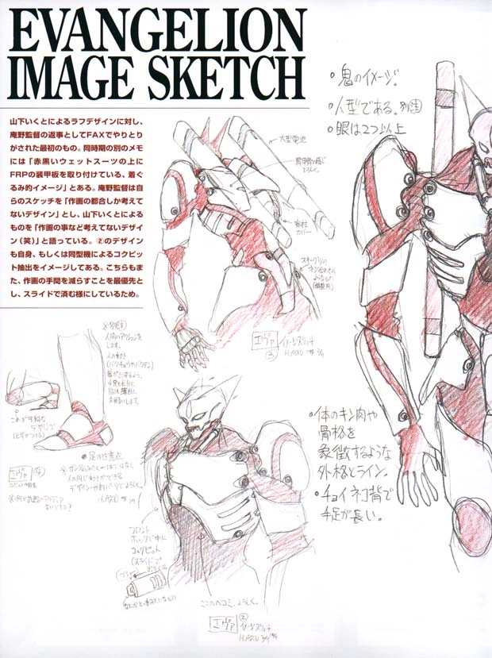
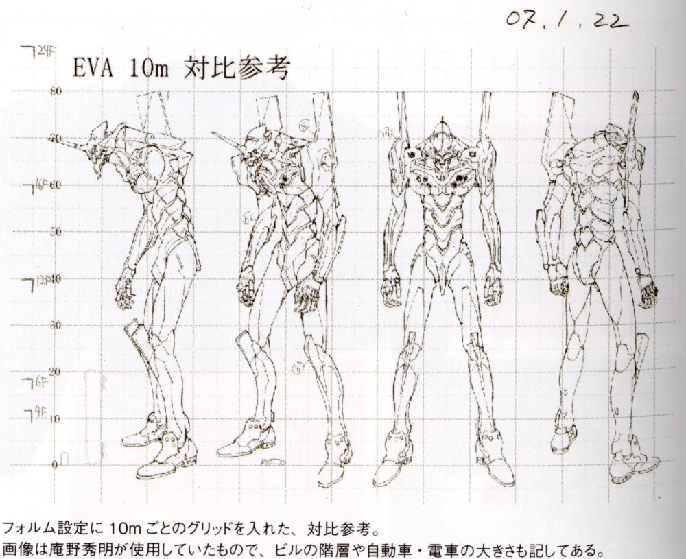

Overview
Neon Genesis Evangelion is a Japanese anime series created by Hideaki Anno and produced by Gainax. It originally aired from October 1995 to March 1996. The series is set in a post-apocalyptic world and follows a group of teenagers who pilot giant mechs known as Evangelions to protect humanity from mysterious beings called Angels.
Design
Original Concept
The Evangelions were designed after a specific type of Japanese monster called "OniWP", commonly translated into "demon" or "ogre". In the words of Anno himself-
"There's a monster in Japan called the Oni; it has two horns sticking out of its head and the overall image of the Eva is based on that. I also wanted to give the impression that beneath this ‘robot monster’ image is not so much a robot, but a giant human."
Corresponding with Anno, Ikuto Yamashita worked to develop the design of the Evangelions (With the exception of the Mass Production Evangelions and the altered Unit-02 design used in End of Evangelion).
"So why did Evangelion wind up with that shape?" … The director instructed me to make, “the image of [an oni].” A giant just barely under the control of mankind. I get the feeling I've seen that correlation before … The image I had for the design concept was the fairy tale, Gulliver's Travels. Enormous Power Restrained. … What I came up with was a giant that looks like a relief on a wall. … I happily discarded the efficiency and feeling of giant size that you can guess at by sight alone. … after the designs were handed in, it caused a stir — even among the staff, positive and negative opinions were flying. And from here on out, I imagine it will cause a stir among comic readers and animation viewers."
 The final Evangelion design is the result of a series of changes throughout early production. Most notably, the more "demonic" aspects of the Evangelions have largely been removed, such as the large horns (although the Unit-02 design in the Rebuild of Evangelion film series has two small horns on top of its head, suggesting a restoration of some of the older aspects of the design).
The head design, in particular, has been subject to a lot of changes. In Neon Genesis Evangelion, most Evangelion share the same general design with slight variation between units. The arms, legs and pylons carry over between every unit with the main variation being found in the units heads and to some degree, their upper torso.  Evangelion Unit-01 has the most unique torso with enlarged and detailed breast plates.
Evangelion Unit-00 also has an original chestplate similar to that of the other units, however after being refitted its torso is made to match the others. One notable exception to the other units are the Mass Production Evangelion which have many minor differences, including that they have been slimmed down, their arms have been shortened, their pylons have been removed and their backs have been adjusted to make room for their wings. The individual Evangelion do not have a fixed height. Depending on the scene, they vary in size from around 40 meters to a towering 200 meters.
Religion
Cross
The cross (十字架, juujika) is a symbolic religious reference frequently used in Neon Genesis Evangelion, though often particularly loosely. Many of the uses of crosses in the series don't actually have a particularly higher meaning or correlation to narrative events, beyond simply that someone is "sacrificed", etc. Also, many times things such as cross-shaped energy explosions are used, but these instances in particular don't really seem to have a higher meaning.
The creators themselves admitted using the emblems of Christianity simply because they "looked cool," according to Evangelion Assistant Director Kazuya Tsurumaki, who at the Otakon 2001 anime convention said:
"There are a lot of giant robot shows in Japan, and we did want our story to have a religious theme to help distinguish us. Because Christianity is an uncommon religion in Japan we thought it would be mysterious. None of the staff who worked on Eva are Christians. There is no actual Christian meaning to the show, we just thought the visual symbols of Christianity looked cool. If we had known the show would get distributed in the US and Europe we might have rethought that choice."
There are 5 types of crosses used in Evangelion. They are the crux immissa (Latin cross), inverted crux immissa, Greek cross, Cross of Tau, and Cross of Lorraine.
Fruit of Knowledge
During Episode 12 Gendo Ikari states that "science is the power of man," possibly suggesting that the Fruit of Knowledge is man's ability to cogitate, using his knowledge of the universe to build the Evangelions, which Kozo Fuyutsuki says mankind was destined to build during The End of Evangelion. This may mean that the Fruit of Knowledge is in truth, the Lilin's brain.